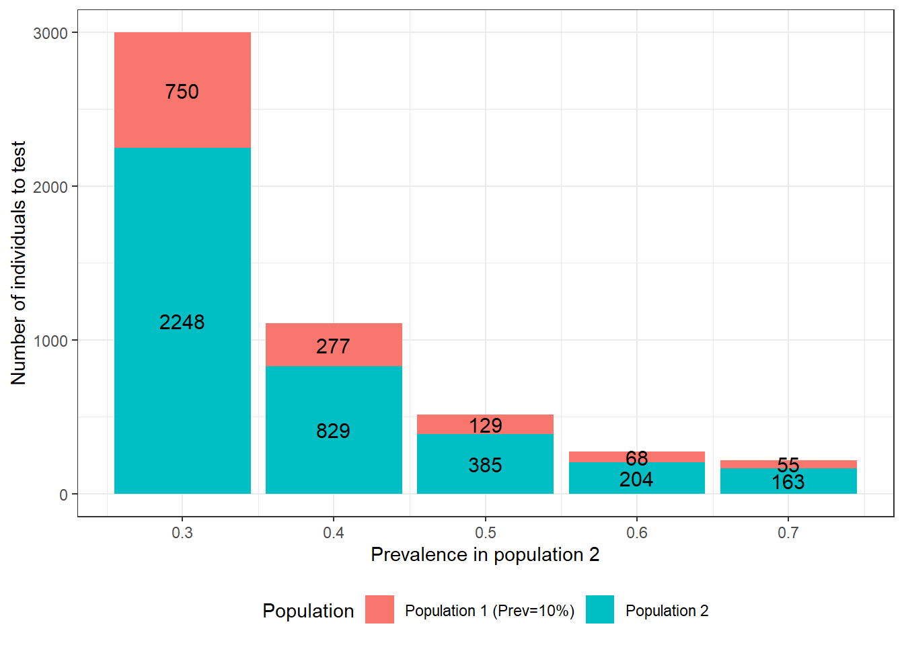

Chapter 15 Sample size
When designing a study for estimating disease prevalence or diagnostic test accuracy we will want to evaluate the required sample size to achieve a certain precision in our test accuracy and disease prevalence estimates. In the following sections, we will first present, as a reminder, the method that can be used to estimate the sample size needed when a gold standard test is used for comparison. This method, however, is not appropriate when the test used for comparison is not a gold standard.
Then we will present a method specific for BLCM, which will provide a more accurate sample size estimation when imperfect tests are compared. This latter method will also be very helpful to quantify the impacts of choosing a given comparison test over another, or for choosing the prevalence that we should aim for in a second population of individuals.
15.1 Method when comparing to a gold standard
Remember, the main parameters we want to estimate are a disease prevalence and a sensitivity and specificity, and these are all proportions. More precisely:
The prevalence is \(\frac{\text{Number of diseased}}{\text{Number individuals}}\)
The sensitivity is \(\frac{\text{Number of test+}}{\text{Number diseased}}\)
The specificity is \(\frac{\text{Number of test-}}{\text{Number healthy}}\)
For any of these fractions, increasing the denominator will result in a decrease in the width of the 95% confidence interval (i.e., a greater precision). To determine the denominator (i.e., the sample size) that could generate a given width for the 95%CI, we could use the following, very simple Frequentist methods.
\(n=p*(1-p)*(\frac{1.96}{E})^{2}\)
Where n is the required denominator, p is the expected proportion, E is the width of the 95%CI we would like to achieve (i.e., the precision), and 1.96 is the Z value corresponding to a type-I error rate of 0.05.
Alternatively, we could compute the width of the 95%CI as function of a given denominator.
\(E=1.96*\sqrt{\frac{p*(1-p)}{n}}\)
Therefore, in order to estimate the required sample size, we would first need to provide an educated guess regarding:
- The true prevalence of disease we will observe;
- The sensitivity and specificity of the test under investigation.
As an example, if we were to design a study:
- On a population where we think the disease prevalence will be around 30%;
- Using a test that we think will have a sensitivity of 85% and specificity of 95%;
- Where we would like to have a width of the 95%CI of 10 percentage-points (i.e., +/- 5% on each side of the median estimate).
We could use the following scripts to get an estimate of the required sample size.
## [1] 80.6736For the prevalence, we would need 81 individuals to obtain a 95%CI width of 10 percentage-points if the prevalence is around 30%.
Note that, to obtain a 95%CI width of 5 percentage-points:
## [1] 322.6944We would now need 323 individuals.
Regarding the sensitivity, remember that the denominator will be the truly diseased individuals, rather than all sampled individuals.
## [1] 48.9804We would need 49 diseased individuals to obtain a 95%CI width of 10 percentage-points if the sensitivity is around 85%.
Regarding the specificity, again the denominator will be the truly healthy individuals, rather than all sampled individuals.
## [1] 18.2476We would need 18 healthy individuals to obtain a 95%CI width of 10 percentage-points if the specificity is around 95%.
Now, we need to reunite these different estimates together. For instance, we saw that measuring 81 individuals was enough to get the precision we needed for the prevalence of disease. But, with 81 individuals and a prevalence of 30%, we would, theoretically, have 24 diseased (30% of 81) and 57 healthy (70% of 81) individuals. And we just computed that we needed 49 diseased individuals to get a precise estimate of the test’s sensitivity.
In this case, we can see that the sensitivity is the limiting parameter. We could, thus, possibly recruit a minimum of 150 individuals and, hopefully, 50 will be diseased and 100 will be healthy. With that latter sample, we would possibly achieve the precision needed for the test’s sensitivity, and we would exceed what we needed for the test’s specificity and for disease prevalence. Of course this will work if our guess estimates were not too “off the mark”.
This basic method, however, is not considering the loss of power that will occur when comparing imperfect tests with one another (as compared to comparing a novel test to a gold-standard test). This should, therefore, be considered as an overoptimistic scenario if the test used for comparison is not a gold standard.
15.2 Method for the Hui-Walter BLCM
Georgiadis et al. (2005) proposed a method to calculate sample size to estimate disease prevalence, sensitivity and specificity with a desired precision, when using the Hui and Walter (1980) model (two conditionally independent tests for screening individuals from two populations). In their article, Georgiadis et al. (2005) provided the hyperlink to an Excel spreadsheet template. We included this spreadsheet in the course material.
Briefly, we need to provide our best guess on:
- Disease prevalence in population 1 (\(\pi1\));
- Disease prevalence in population 2 (\(\pi2\));
- Sensitivity of the first (\(Se1\)) and second test (\(Se2\));
- Specificity of the first (\(Sp1\)) and second test (\(Sp2\)).
And, then, the desired 95% BCI width for these different parameters.
Below is a screen capture of the spreadsheet. In this case, we proposed to study two populations where:
- Disease prevalence (\(\pi1\) and \(\pi2\)) would be 0.10 and 0.70;
- Sensitivity of the two tests (\(Se1\) and \(Se2\)) would be 0.85 and 0.95;
- Specificity of the two tests (\(Sp1\) and \(Sp2\)) would both be 0.95;
- Desired width of the 95% BCI for disease prevalence (\(\pi1\) and \(\pi2\)) would be 0.15;
- Desired width of the 95% BCI for sensitivity (\(Se1\) and \(Se2\)) would be 0.20;
- Desired width of the 95% BCI for specificity (\(Sp1\) and \(Sp2\)) would be 0.10;

Additional information are provided in the spreadsheet, but we can already see that we would need to sample 134 individuals from the low (10%) prevalence population (N1) and 402 from the high (70%) prevalence population (N2) to obtain the desired width for the 95% BCIs.
Again, this will work if our guess estimates were not too “off the mark”. One additional note, when using the Georgiadis et al. (2005) method, we are not considering any informative priors that we may want to use. Typically, if we were to use informative priors on some or all of the unknown parameters the width of the 95% BCI will possibly be modified. For instance, if we provided relatively narrow priors for a given parameter, and if these priors agree closely with the observed data, then the 95% BCI could be more precise than anticipated (i.e., narrower). On the other hand, narrow priors which are not consistent with the observed data would possibly yield larger 95% BCI.
Nevertheless, this spreadsheet is quite handy to get rough sample size estimates. It is also quite useful to explore, for instance, how larger differences in disease prevalence between populations can improve the study power. It is also very interesting to investigate how the choice of the second test used for comparison will affect the study power.
As an example, in the following figure we illustrated, for the Hui and Walter (1980) model, how the difference in prevalence between the two populations would impact sample size. As you can see, for this specific scenario, targeting populations with more important prevalence differences could have a tremendous impact on power of the study. For instance, in this example, with prevalence of 0.10 and 0.20 in the first and second population, a total of 14356 individuals would have to be tested to achieve the desired precision. On the other hand, with prevalence of 0.10 and 0.70 in the first and second population, only 218 individuals would have to be tested.

Figure 15.1: Number of individuals to test as function of the difference in prevalence between populations. For these calculations we assumed that: 1) the first population has a prevalence of disease of 0.10; 2) the two tests are expected to have Se and Sp of 0.90; 3) we are only interested in estimating the accuracy of the first test; and 4) we wish to obtain a 95 BCI width of <20 percentage-points (i.e., < +/- 10 percentage points) when reporting accuracy of the first test.
Now, we could use two populations with expected disease prevalence of 0.10 and 0.50, but we are, this time, wondering what would be the best test to use for comparison so we can achieve the required precision with the smallest possible sample size. Below, we quantified how a change in the specificity of the second test would affect the require sample size. We see that, if the test used for comparison has a specificity of 0.70, we will need to test 1664 individuals to achieve the desired precision. On the other hand, if this test specificity is 1.0 (i.e., no false positive results), only 218 individuals would have to be tested.
![Number of individuals to test as function of specificity of the test used for comparison. For these calculations we assumed that: 1) the first and second population have disease prevalence of 0.10 and 0.50; 2) the test under investigation is expected to have a Se and Sp of 0.90; 3) we are only interested in estimating the accuracy of this first test; 4) we wish to obtain a 95 BCI width of <20 percentage-points (i.e., < +/- 10 percentage points) when reporting accuracy of the first test; and 5) the test used for comparison is expected to have a sensitivity of 0.90.](_main_files/figure-html/unnamed-chunk-107-1.png)
Figure 15.2: Number of individuals to test as function of specificity of the test used for comparison. For these calculations we assumed that: 1) the first and second population have disease prevalence of 0.10 and 0.50; 2) the test under investigation is expected to have a Se and Sp of 0.90; 3) we are only interested in estimating the accuracy of this first test; 4) we wish to obtain a 95 BCI width of <20 percentage-points (i.e., < +/- 10 percentage points) when reporting accuracy of the first test; and 5) the test used for comparison is expected to have a sensitivity of 0.90.
We could also quantify how a change in the sensitivity of the test used for comparison would affect the require sample size. We see that, if the test has a sensitivity of 0.70, we will need to test 851 individuals to achieve the desired precision. On the other hand, if the test’s sensitivity is 1.0 (i.e., no false negative results), only 420 individuals would have to be tested.
![Number of individuals to test as function of sensitivity of the test used for comparison. For these calculations we assumed that: 1) the first and second population have disease prevalence of 0.10 and 0.50; 2) the test under investigation is expected to have a Se and Sp of 0.90; 3) we are only interested in estimating the accuracy of this first test; 4) we wish to obtain a 95 BCI width of <20 percentage-points (i.e., < +/- 10 percentage points) when reporting accuracy of the first test; and 5) the test used for comparison is expected to have a specificity of 0.90.](_main_files/figure-html/unnamed-chunk-108-1.png)
Figure 15.3: Number of individuals to test as function of sensitivity of the test used for comparison. For these calculations we assumed that: 1) the first and second population have disease prevalence of 0.10 and 0.50; 2) the test under investigation is expected to have a Se and Sp of 0.90; 3) we are only interested in estimating the accuracy of this first test; 4) we wish to obtain a 95 BCI width of <20 percentage-points (i.e., < +/- 10 percentage points) when reporting accuracy of the first test; and 5) the test used for comparison is expected to have a specificity of 0.90.
For this specific scenario, we can see that there is a greater gain in study power, when improving the specificity of the test used for comparison vs. improving its sensitivity. Indeed, with prevalence of 0.10 and 0.50 in the two populations, we have more healthy individuals than diseased individuals. As a consequence, in this example, an increase in the specificity of one of the tests was a better strategy to reduce misclassification issues than increasing its sensitivity. Finding a second test with the latter properties is often doable. For instance, for many diseases we have tests that can lead to the isolation of the microorganism and, if the microorganism is a strict pathogen, then such a test would be deemed to be 100% specific. As a comparison, using the same example, if we would have used a gold standard test for comparison, 196 individuals would have to be tested, as compared to 218 when using a second test with perfect specificity and a sensitivity of 0.90. Not a huge difference… And in many cases, another imperfect test would be cheaper than a gold standard test, and that is when a gold standard test is actually available (often it is not).
As we can see, conducting an a priori sample size estimation is extremely important when designing a diagnostic test validation study, since relatively minor decisions regarding the study design can greatly affect its power. One final note, if we are planning a study with more than two populations, or more than two tests, this spreadsheet could still be used to obtain a “worst-case scenario” sample size estimation (i.e., study power would mainly be increased, not decreased, by adding extra populations or tests).